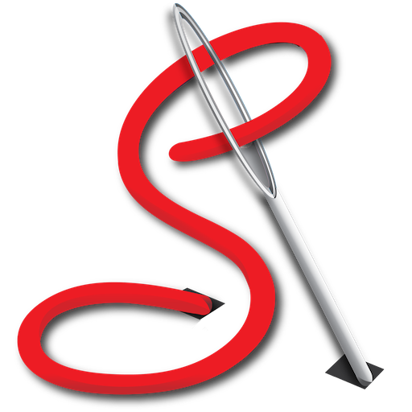

Stitch This! Help
Introduction
Overview : what Stitch This! does and doesn't do
Contents
Taking you through how the app works, step by step
- Open and resize an Image
- Match your resized image to a thread range, and reduce the number of colours in it
- Select your Symbols for output
- Set output options and Generate the PDF
Spares Manager
Preferences : set up your working defaults
F.A.Q. : Your questions answered
Beginner's corner : if you're new to needlework